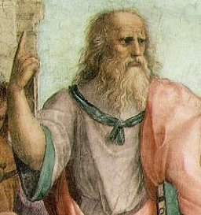

Founding
A conscious, deliberate act of creating a system of government that benefits the people
Patria
A sense of homeland
Cleisthenes
An Athenian tyrant that sat down with the leading men of Athens and came up with a democracy
Republic
From the latin "res publica" meaning "public thing", it is when the citizens of the political state govern themselves rather than submit to a monarch, despot, or oligarchy; freedom from domination of all sorts. Two brief (and unexplained) attempts at this in Renaissance Europe. Great Britain was sort of a republic, because of Parliament.
Heritage
The traditions, beliefs, principles, events, etc. that we inherit (or choose to inherit) from the past.
Sovereignty
Ultimate political power-having the final say. Government must have sovereignty to be effective whatsoever.
Brown v Board of Education
Supreme Court desegregated schools. Governor of Arkansas sent the Arkansas National Guard to keep them out of the school, so Eisenhower sent a division of the Army to enforce the black student's attendance by any means necessary, and then nationalized the Arkansas National Guard to enforce the law through the school year.
Human Predicament
The cycle from tyranny to anarchy, to which sovereign power and its ill effects give rise.
Despot
A ruler exercising absolute power.
Revolution
Right side of human predicament cycle; a means of removing tyranny from power.
Tyranny
Top of human predicament cycle; absolute power centralized in one person or small group. Often preferable to anarchy. The rule of will.
Anarchy
Bottom of human predicament cycle; no one person (or group) maintains absolute power. Characterized by ass disorder caused by failure to agree on a common course of action.
Competing Groups
Left side of human predicament cycle; Groups that, in a state of anarchy, fight for supreme power and control, part of the human predicament cycle.
Good Society
Reasonably stable and prosperous society without an oppressive tyranny. Usually includes peace, respect, vibrant culture, and personal freedom to live the way one chooses. *It is a self-conscious attempt to avoid tyranny and anarchy- the good society doesn't happen by accident. It is a balance between liberty and order that benefits society as a whole.Offers human fulfillment aka "Goods of the Soul". Hinges on the tension between virtue and self-interest.*
The Human Predicament Cycle
Tyranny -> Revolution -> Anarchy -> Competing Groups ->
Plato
Greek Philosopher and author of The Republic, which extolled civic virtue and the necessity of arete.
Politcal legitimacy
Ruling by a sanction higher than stark necessity; sanction may stem from divine rights, wisdom, or consent, etc.
King James I
Claimed political legitimacy through the divine right of kings
Theocracy
Divinely inspired rule, or rule by religion